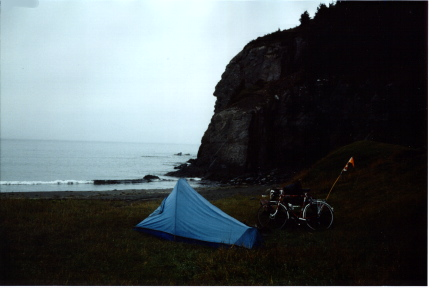
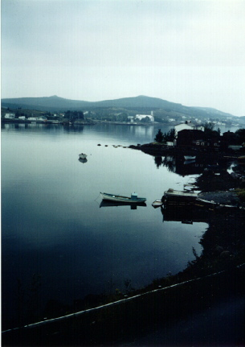

Previous
Day
Previous
Day Next Day
Next Day
I got up late today. Had a quick dip in the Atlantic Ocean.

Boy, was that cold! Much different
from the Nova Scotia coast.
I didn't get going very early. Rode down the Peninsula. People are sure friendly
in this province. It was really beautiful
,
too. I'm glad I didn't just take the Trans-Canada.
Eventually called Paul F. [CUSO person]. Finally got him. Phone booths are scarce here. Anyway, they expected me in the early afternoon for some reason. They seemed disappointed that I wouldn't arrive till evening.
I was given the number of Linda R. Called her when I hit the city. She got me a room in the Parkview Inn. So I got there. Watched TV and had a cold supper in my room.
Previous
Day
Next Day
 Dave's Page
Dave's Page
 Home
Home